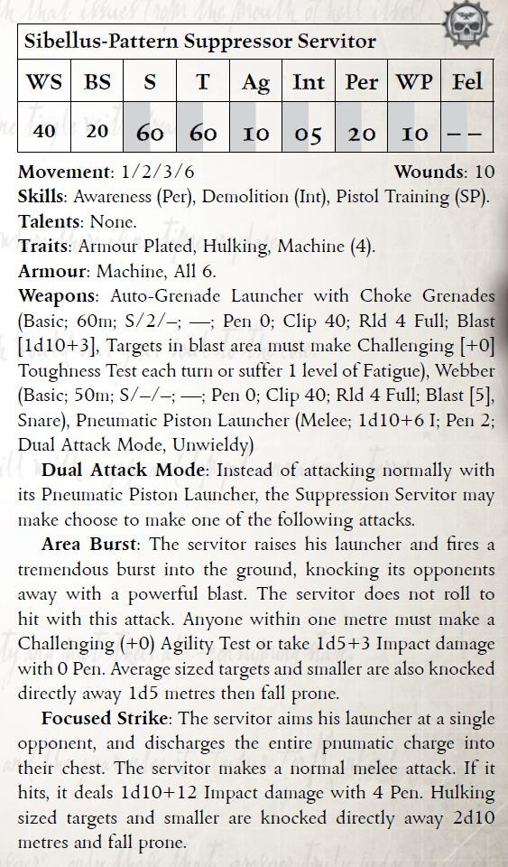
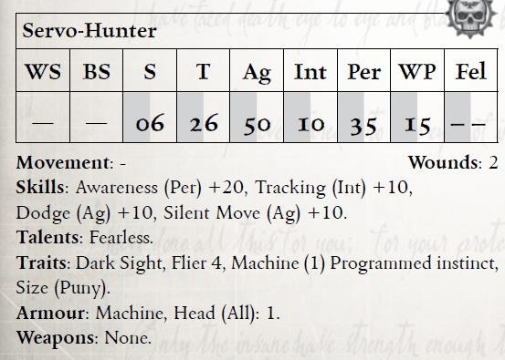
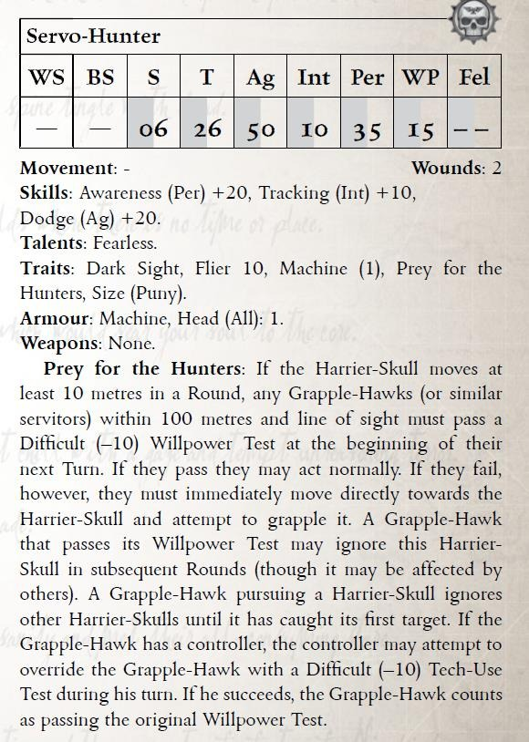
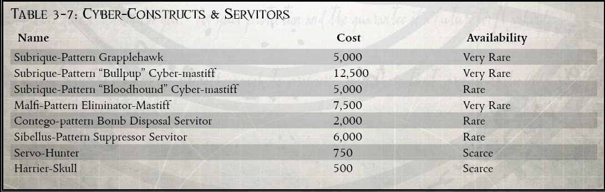
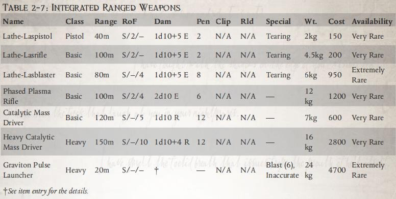

并非所有执法团队都能获得法务部严密设计的智能构造体猎犬或擒捕鹰。资源有限的治安机构常会使用更为粗糙的伺服机仆来履行类似职责。
伺服猎者就是这种例子：这是一种简陋的本地改造伺服颅骨，主要用于搜寻区域内的目标。它通常被马尔菲次星区的执法机构使用，外壳常为忠犬头骨，以求其精神忠诚。伺服猎者会悬浮在空中，搜索设定区域内的人形热源目标，并在定位后持续发出警报，直至被解除指令。


被底巢帮派讥称为“擒捕老鼠”，掠鼠颅正逐渐在卡利西斯星区扩散。它们实为改装的伺服颅骨，与老鼠无关，只因其独特功能而得名——干扰擒捕鹰的目标识别系统。
部分回收者会花费重金学习如何重编这类伺服机体的初级逻辑程序，令其做出特定规避动作，从而吸引擒捕鹰误判并扑向掠鼠颅。随着其普及度提升，日益恼火的审判官也逐渐将其作为优先清除目标。

《审判之书》中呈现的许多 NPC 属性、天赋与特性并不严格遵循标准的派生数值计算方式。毕竟，这些生物与对手无需遵守玩家角色的成长系统。
例如，擒捕鹰的地面移动速率为常规属性，而其飞行时则采用其飞行（15）特性。部分四足构造体移动速度高低不一，或因伺服马达功率不同，或因负重而减速。
此外，除非特别标明，所有 NPC 默认拥有使用其个人档案中武器所需的武器训练天赋。是否能使用其他武器，交由 GM 判断。
【译者：迷路的幻象、维维豆糕、五三点九】
既是仿生义体也是武器，猩红卫队的集成武器使他们在大多数常规部队面前拥有明显优势。每一件集成武器都直接与储压线圈相连，能从近乎无穷的能量源中汲取能量，这让这些古老的武器能够持续不断地发射猛烈火力。得益于这种武器，绯红卫队几乎无需担心后勤补给或弹药品质；然而集成武器一旦失去了能量源就几乎毫无用处。这意味着阵亡的猎兵的武器很难被夺走用于对付机械神的仆从。
要使用集成武器，角色必须具备异形武器训练（义体集成远程武器）和/或异形武器训练（义体集成近战武器）技能。
INTEGRATED WEAPONS
Part weapon system and part bionic, the integrated weapons of the Crimson Guard give them a clear advantage over most conventional forces. Each one is linked directly to a Potentia Coil, giving them a near-endless amount of energy to draw from, and allowing these ancient weapons to deliver punishing volleys of fire without pause. Thanks to this type of weapon, the Crimson Guard rarely have to worry about logistical trains or the vagaries of ammunition quality, but as a downside, the weapons are virtually useless when separated from a constant power supply. This means that there is little chance of fallen Venatorius’ weapon being taken and turned against the servants of the Machine God.
To use Integrated Weapons the character must have Exotic Weapon Training (Integrated Ranged Weapon) and/or Exotic Weapon Training (Integrated Melee Weapon)
集成武器与“储压线圈”相连以获取能量，因此只有拥有“储压线圈”植入物的人才能使用这种武器类型。可以通过改装方法让集成武器在没有“储压线圈”的情况下也能使用，详情见第 59 页“改装集成武器系统”侧栏。当连接到“储压线圈”时，集成武器拥有无限弹药且无需重新装填（除非另有说明）。
集成武器不会卡壳；当集成武器卡壳时，使用者会因自身“储压线圈”的损耗而累积 1 级疲劳。
集成武器总是与使用者紧密相连，若要丢弃或废弃它们，必须先将它们与使用者的“储压线圈”或其他电源断开连接。将集成武器与“储压线圈”重新连接或断开连接操作需要进行一次（+10）技术使用测试，这是一个部分动作。
由于某些集成武器会替代四肢或会安装在身体内部（比如肩部或臀部以上位置），这些集成武器无法简单的被拆下来，可能需要专业的医疗人员和适当的设施才能将其断开连接。由 GM 来决定移除这种武器的难度有多大，以及是否有可能将其移除。
武器升级
集成武器组件 +0.5kg 200 王座币 罕见
INTEGRATED WEAPONS RULES
Integrated Weapons are linked to and draw power directly from the Potentia Coil, and as such, only those who possess this implant can make use of this weapon type. There are ways to jury rig Integrated Weapons so that they can be used without a Potentia Coil, as described in the Jury Rigging Integrated Weapon Systems sidebar on page 59. Whileconnected to a Potentia Coil, Integrated Weapons have unlimited ammunition and do not need to be reloaded (unless otherwise noted). Integrated Weapons do not Jam; whenever
an Integrated Weapon would suffer a Jam, the user instead takes 1 Level of Fatigue as the drain on their own Potentia Coil starts to wear them down.
Integrated Weapons are always physically linked to their user, and cannot be dropped or discarded without first disconnecting them from the user’s Potentia Coil or other power source. Disconnecting or reconnecting an Integrated Weapon to a Potentia Coil requires an Ordinary (+10) Tech-Use Test and is a Half Action. Some Integrated Weapons take the place of limbs, or are mounted within the body such as at a shoulder or above the hip. In these instances, quick removal might be impossible and might require dedicated medical staff and the correct facilities before they can be disconnected. It is up to the GM to determine how difficult removing such a weapon would be, as well as whether it is possible to remove it in the first place.
武器升级
Integratedd Weapon Components +0.5kg 200 Extremely Rare
除了以下所描述的特定集成武器的选择之外，其他远程武器也可以进行改装并转化为集成武器。任何激光武器都可以转化为集成武器，从而获得上一节中提到的益处。等离子和热熔武器可以进行改装成为集成武器；这会使它们的效率大大提高，因为每次射击所使用的弹药更少（居然不是无限弹药）。义体集成型等离子和热熔武器只要仍与“储压线圈”（或类似电源）相连，其弹夹容量就会翻倍。同时是等离子武器的集成武器仍然会过热，但只要仍相连，它们就会失去充能。集成武器型自动武器和发射器武器不会获得通常的任何益处，而是获得可靠和风暴。
近战武器也可以作为集成武器，不过这只能应用于链锯、震击或能量武器类型。集成型链锯武器获得锐锋。对抗集成型震击武器造成的眩晕的耐力测试会受到额外的 -30 罚款影响。集成型能量武器的伤害和穿透力会提高 +2。原始武器（无论是远程武器还是近战武器）都无法通过这种方式进行升级。将武器升级为集成型武器遵循武器升级的标准规则（见《黑暗异教》核心规则手册第 141 页），不过进行这种升级时，尝试升级的玩家需要具备禁忌知识（机械神教），并且必须测试成功。制造集成型武器所需的组件仅在铸造世界中才有。
CREATING INTEGRATED WEAPONS
Aside from the selection of specific Integrated Weapons described below, other ranged weapons can be modified and converted into Integrated Weapons. Any Las weapon can be converted into an Integrated Weapon, gaining the benefits mentioned in the previous section. Plasma and Melta weapons can be modified to become Integrated Weapons; this has the effect of making them far more efficient, as they use less ammunition for each shot. Integrated Plasma and Melta weapons double their standard Clip Size as long as they remain connected to a Potentia Coil (or similar power source). Integrated Weapons that are also Plasma weapons can still Overheat, although they lose the Recharge Quality as long as they remain connected. Integrated Solid Projectile and Launcher weapons do not gain any of the usual benefits, but instead gain the Reliable and Storm Weapon Qualities.
Melee weapons can also be Integrated, although this can only be done to Chain, Shock, or Power weapon types. Integrated Chain weapons gain the Razor Sharp Quality. Toughness Tests to resist Stunning from Integrated Shock weapons suffer an additional –30 Penalty. Integrated Power weapons increase their Damage and Penetration by +2. Primitive weapons, ranged or melee, cannot be upgraded in this manner. Upgrading a weapon to an Integrated Weapon follows the standard rules for weapon upgrades (see page 141 in the DARK HERESY Core Rulebook), except that the character attempting to upgrade the weapon requires Forbidden Lore (Adeptus Mechanicus) as a Trained Skill before he may attempt the Test. The components required to create Integrated Weapons are only available on Forge Worlds
一旦一个断开连接的集成武器重新连接到储压线圈或其他电源上，它就会恢复集成武器通常具有的所有优点。如果一个集成武器无法重新连接且角色有外部电源，那么它可以手动充电。这需要进行一项（-20）的技术应用测试，并且会为集成远程武器提供额外的 1d5 弹药，为集成近战武器提供 1d5 轮能量，之后它会再次停止运行。如果技术使用测试有 2 个以上的失败度，则充电测试会损坏武器，使其失去作用。线圈充能天赋可以用来为断开连接的集成武器充电，将耐力测试视为艰难（-20），如果耐力测试失败，应遵循上述技术应用测试的相同惩罚。
RECONNECTING AND RECHARGING INTEGRATED WEAPONS
Once a disconnected Integrated Weapon has been reconnected to a Potentia Coil or other power source, it regains all the usual benefits of being an Integrated Weapon.
If an Integrated Weapon cannot be reconnected, it can be manually charged if the character has access to an external power source. This requires a Hard (–20) Tech Use Test, and grants an Integrated Ranged weapon an additional 1d5 shots and gives an Integrated Melee weapon 1d5 Rounds of power before it ceases operating again. If the Tech-Use Test is failed by two or more Degrees of Failure, the recharge attempt has damaged the weapon, rendering it useless. The Luminen Charge Talent can be used to recharge disconnected Integrated Weapons, treating the Toughness Test as Hard (–20), with the same penalties as the Tech-Use Test above should the Toughness Test be failed.
集成武器是一种神秘的装置，在很大程度上，机械神教之外的任何人都无法使用。因此，集成武器系统在很大程度上不属于机械教部队，因为更常规的武器往往比使用非标准电源的集成武器更方便。所以当试图在没有储压线圈的情况下使用缴获或被盗的集成武器，往往不太好用，但也能运行。
非标准电源
假设玩家有某种外部电源（地狱枪背包、各向异性燃料棒等），可以通过进行困难（-20）技术使用测试或困难-20生计（军械师）测试来适应与集成武器一起使用。如果测试成功，集成武器将重新获得作为集成武器的好处，尽管有一些缺点（见下文）。如果测试失败，则角色无法将此电源链接集成武器，但如果他有其他电源，可以用其他电源重试。如果此测试失败有两个及以上失败程度，发生了可怕的错误，损坏了武器并烧坏了电源。将这两个物品都视为损坏。
它只是在运行
由于将集成武器连接到除储压线圈之外的其他东西无异于技术异端，因此这些武器的机魂会反抗这种亵渎的充电方法，从而导致一些重大缺陷。 如上所述，一旦连接到非标准电源，集成武器就会恢复其初始状态。然而，如果集成武器是远程武器，它也会获得不可靠武器质量（如果有可靠则失去可靠），任何干扰都会导致与电源的强制断开，需要如上所述重新连接。如果集成武器是近战武器，那么流经武器的不寻常和不受管制的能量流会使其具有不平衡（如果有平衡则失去平衡）。如果角色在即将到来的攻击中未能通过武器技能测试，91 以上的结果将导致与电源的强制断开，需要如上所述重新连接。
JURY RIGGING INTEGRATED WEAPON SYSTEMS
The Potentia Coil is an arcane device that is, for the most part, simply unavailable to anyone outside the Cult of the Omnissiah. For that reason, integrated weapon systems are largely outside of the forces of the Mechanicus, as more conventional weapons are often more convenient than attempting to force an integrated weapon to work with a non-standard power source. That said, there are many who have tried to make captured or stolen integrated weapons operate without the need for a Potentia Coil. The results are often far from perfect, but at least the weapon can be used.
NON-STANDARD POWER SOURCES
Assuming the player has an external power source of some kind (Hellgun backpack, sotropic Fuel Rod, etc.), it can be adapted for use with the Integrated Weapon by making either a Hard (–20) Tech-Use Test or a Hard (–20) Trade (Armourer) Test. If the Test is successful, the Integrated Weapon regains the benefits of being an Integrated Weapon, albeit with some disadvantages (see below). If the Test is failed, then the character has been unable to adapt this power source to the Integrated Weapon, but may try again with a different power source if he has one. If this Test is failed by two or more Degrees of Failure, something has gone horribly wrong, damaging the weapon and burning out the power source. Treat both items as destroyed.
IT’S WORKING… JUST!
As connecting an Integrated Weapon to something other than a Potentia Coil is tantamount o tech-heresy, it is unsurprising that the machine-spirits of these weapons would rebel against such an impure method of power generation, resulting in some significant drawbacks.
As noted above, once connected to a non-standard power source the Integrated Weapon regains all its usual benefits. However, if the Integrated Weapon is a ranged weapon, it also gains the Unreliable Weapon Quality (and loses the Reliable Weapon Quality if it happened to have it), and any Jam results in a forced disconnection from the power source, requiring it to be reconnected as described above. If the integrated weapon is a Melee weapon, then the unusual and unregulated energy currents flowing through the weapon give it the Unbalanced Weapon Quality (and cause it to lose the Balanced Weapon Quality if it happened to have it). If the user ever fails a Weapon Skill Test to Parry an incoming attack, a roll of 91 or higher results in a forced disconnection from the power source, requiring it to be reconnected as described above.
一旦集成武器被断开连接，它将迅速失去其无限的能量源所提供的优势。该武器通常只保留少量剩余电量，但是会很快耗尽，直到武器失去效用。远程集成武器的弹匣容量 1d5，当弹药耗尽后需要重新充电。断联武器会失去“可靠”。断联的集成武器會卡壳，一旦卡壳它会立即失去所有剩余的弹药。集成近战武器在 1d5 轮内耗尽电量，并转化为相同类型的原始武器（例如，集成能量剑在能量耗尽后转化为原始剑）。集成武器只有在重新连接后才能恢复其优势。
DISCONNECTED INTEGRATED WEAPONS
Whenever an Integrated Weapon is disconnected, it quickly loses the benefits of its near-limitless power source. The weapon usually retains a residual charge, but this quickly fades until the weapon becomes useless. Ranged Integrated Weapons retain a clip size of 1d5, and once the remaining shots have been fired, it cannot be fired again until it has been reconnected or recharged. If the weapon had the Reliable Weapon Quality, it loses this Quality. Disconnected Integrated Weapons can Jam, and if this occurs they lose all their remaining ammunition immediately. Integrated Melee weapons lose all power within 1d5 rounds and revert to a Primitive weapon of the same type (e.g. an Integrated Power Sword will be treated as a standard Sword once its power has drained). Integrated Weapons only regain their special benefits once reconnected.
Integrated Lathe-Laspistol
Despite being the smallest integrated weapon in standard use among the Crimson Guard, the Integrated Lathe-Laspistol is no less deadly than its larger cousin. It has a good rate of fire and decent penetrative abilities, but lacks the range of the rifle.
Integrated Lathe-Lasrifle
Originally derived from an ancient archeotech design, the Integrated Lathe-Lasrifle packs a greater punch than regular Lasguns. The standard weapon of the Crimson Guard, LatheLasrifles are fast becoming a more and more common sight throughout the Calixis Sector.
Integrated Lathe-Lasblaster
The Lathe-Lasblaster sits at the pinnacle of Lathe-based las technology. Issued only to Triarii Crimson Guard and higher, the Lathe-Lasblaster differs from the Lathe-Lasrifle in that the entire forearm is removed and replaced, making it almost a form of cybernetic weapon. With a targeting system linked to a user’s bionic retinal implants, the Lathe-Lasblaster can cut down countless foes in a matter of seconds.
The Integrated Lathe-Lasblaster must replace either the user’s left or right arm. The gun itself replaces the hand and forearm, joining at the elbow. The arm cannot be used for anything else once the Lathe-Lasblaster has been installed. Installing an Integrated Lathe-Lasblaster is a time-consuming and delicate procedure that requires trained professionals, and therefore follows the rules for attaching bionics and implants (see page 153 in the DARK HERESYCore Rulebook). An Integrated LatheLasblaster is not a normal cybernetic, however, and thus does not add to the user’s Toughness Bonus. Jury-rigging an Integrated Lathe-Lasblaster is an exceptionally difficult task; all Tests for adapting external power supplies, as well as recharging depleted Lathe-Lasblasters, suffer an additional –20 Penalty.
尽管集成拉斯型激光手枪是猩红卫队标准装备中体积最小的综合武器，但其杀伤力却丝毫不亚于其较大的同类武器。它拥有良好的射速和不错的穿透能力，但射程不及步枪。
综合集成拉斯型激光步枪源自古代的尖端科技设计，其火力远超普通激光枪。作为猩红卫队的标准武器，拉斯型激光步枪在卡利克斯星域越来越常见。
拉斯型激光爆破枪处于基于拉斯的激光技术的巅峰。拉斯型激光爆破枪仅适用于资深猩红卫队及更高级别，与拉斯型激光步枪的不同之处在于整个前臂都被移除和更换，使其几乎成为一种生化义肢武器。通过与用户的仿生视网膜植入物连接的瞄准系统，拉斯型激光爆破枪可以在几秒钟内消灭无数敌人。集成拉斯型激光爆破枪必须替换用户的左臂或右臂。枪本身取代了手和前臂，在肘部连接。一旦安装了拉斯型激光爆破枪，该臂就不能用于其他任何用途。安装集成拉斯型激光爆破枪是一个耗时且精细的过程，需要经过培训的专业人员，因此需要遵循连接仿生和植入物的规则（见《黑暗异端》规则手册第 153 页）。然而，集成拉斯型激光爆破枪不是普通的生化义肢，因此不会增加用户的韧性。操纵集成拉斯型激光爆破枪是一项极其困难的任务；所有链接外部电源的测试，以及为没电的拉斯型激光爆破枪充电的测试，都会受到-20 惩罚。
Phased Plasma Rifle
Once a technology that could have supplanted all other forms of offensive firepower, plasma technology is now all but lost to the Imperium. Very few forge worlds possess the knowledge to create plasma weapons, and most of those only manage to do so by following ancient sets of instructions created millennia ago. As one of the more dangerous special issue weapons within the Crimson Guard, the Phased Plasma Rifle does away with many of the drawbacks common to Imperial plasma weaponry, all but eliminating the need for recharging, and significantly reducing the excess heat that conventional plasma weapons tend to generate. This technology is guarded jealously, and since it was rediscovered the Tech-Priests of the Lathes have refused any attempts to adapt the technology for more general use.
From their perspective, the Phased Plasma Rifle is a weapon of purity, and to change it in any way would defile the machinespirits that drive each weapon. With the Adeptus Mechanicus’ glacial opinion unlikely to change, this weapon will remain only within the hands of the Crimson Guard.
等离子技术曾经是一种可以取代所有其他形式的进攻性火力的技术，然而它已经被帝国已经遗失了。很少有锻造世界拥有制造等离子武器的知识，其中大多数只能通过遵循数千年前创建的古代教条来实现。作为深红卫队中较为危险的特种武器之一，相位等离子步枪消除了帝国等离子武器的许多常见缺点，几乎无需充能，并大大减少了传统等离子武器产生的多余热量。这项技术被小心翼翼地保护着，自从它被重新发现以来，拉斯世界的技术神甫拒绝了任何将这项技术应用于更广泛用途的尝试。 在他们看来，相位等离子步枪是一种纯净的武器，任何方式改变它都会玷污驱动它的机魂。由于技术神甫的冷酷观点不太可能改变，这种武器只被猩红卫队装备。
Catalytic Mass Driver Weapons
Despite a strange and unexplained aversion to melta-weaponry, the Crimson Guard are not bereft of armour-cracking firepower. Catalytic Mass Drivers are one of the strongest weapons in service to the Venatorii, and one of the few known integrated ballistic weapons. The gun uses energy from the Potentia Coil to propel tiny shards of metal at alarmingly high velocities, enough to rip through most known types of personal armour. The basic Catalytic Mass Driver is also one of the few integrated weapons that is known to run out of ammunition, yet the projectiles it fires are so tiny that the drum-sized magazines can last for many hours of constant use. The Heavy Catalytic Mass Driver is a larger version of the standard

rifle-sized weapon. It does only slightly more damage than the regular weapon, but its rate of fire is considerably higher.
尽管深红卫队对热熔武器有奇怪且无法解释的厌恶，但并没有抛弃反装甲武器。质量发射器是猎兵武器库中最强大的武器之一，也是为数不多的已知集成实弹武器之一。该枪利用储压线圈的能量以惊人的速度推动微小的金属碎片，足以撕裂大多数已知类型的个人盔甲。质量发射器也是已知弹药消耗量最少的集成武器之一，由于它发射的弹丸非常小，以至于弹鼓大小的弹匣可以持续使用数小时。重型质量发射器是标准步枪大小武器的较大版本。它的伤害只比普通型稍大，但它的射速要高得多。
Graviton Pulse Launcher
Thanks to the unusual gravitic phenomena that affect the Lathes, the Calixis Mechanicus are experts in gravity manipulation, and the Graviton Pulse Launcher represents one of the many fruits of their expertise. Based upon the graviton gun, the launcher projects an orb or nucleus of barely contained gravitic energy. The orb descends rapidly, limiting its range, but once a target is struck, the field containing the energy collapses and a vast pulse of energy radiates outwards, violently crushing anything nearby. Everything caught in the blast area is pressed to the ground and must take a Hard (–20) Strength Test or be knocked down. Being thrown to a solid surface from a standing position and forced to the ground in this way is enough to inflict 1d5 Impact Damage with the Primitive Quality to the Body, although what the character or object is thrown against and how far they fall may well make this effect far worse. Additionally, anyone attempting to move or perform physical actions within the blast radius for 1d5 Rounds afterwards must first pass an Arduous (–40) Strength Test. At the GM’s discretion, the blast may shatter brittle objects, collapse loose flooring, rupture containment vessels, damage vehicles and machinery, plus wreak any other havoc deemed appropriate.
由于影响拉斯的不寻常的重力现象，卡里西斯的技术神甫是重力操纵的专家，重力脉冲发射器代表了他们专业知识的众多成果之一。基于重力武器，重力脉冲发射器投射出一个几乎不含重力能量的球体或原子核。由于弹道会迅速下坠（战地大狙是吧）限制了它的射程，但当其命中目标就会导致球体能量场坍塌，巨大的能量脉冲向外辐射，猛烈地粉碎附近的任何东西。爆炸区域内的所有物体都被压在地上，必须进行困难（-20）力量测试或被击倒。从站立位置扔到固体表面并以这种方式被迫落地，这足以对身体造成具有原始质量的 1d5 冲击伤害，尽管角色或物体所面对的物体以及它们坠落的距离可能会使这种效果变得更糟。此外，任何试图在爆炸半径内移动或进行 1d5 轮物理动作的人必须首先通过艰苦（-40）力量测试。根据 GM 的判断，爆炸可能会粉碎易碎物体，倒塌松散的地板，破裂安全壳，损坏车辆和机械，并造成任何其他适当的破坏。